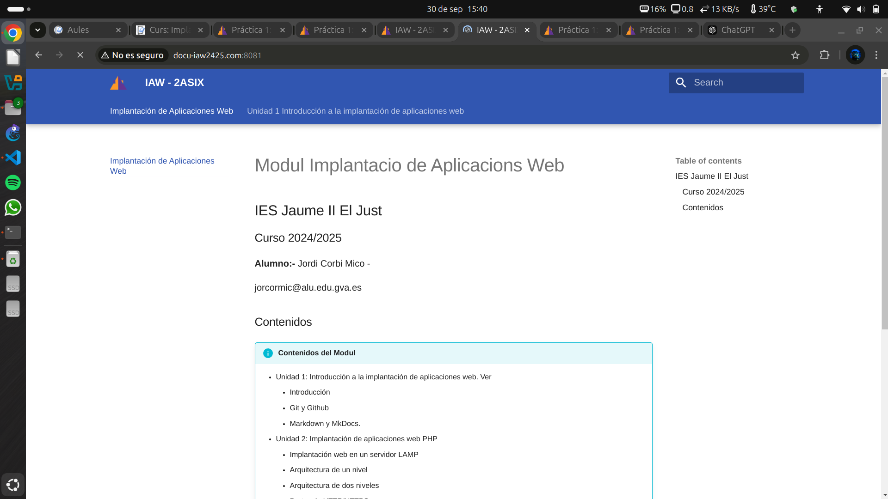

Practica 1:Implantación de una web estática con Apache
Objetivos de la práctica
- Instalar y configurar un servidor web Apache2.
- Crear distintos Host Virtuales en apache2 que nos permiten tener sitios web diferenciados.
- Acceder a cada Host Virtual con un determinado nombre de dominio.
1. Configuracio de Host virtuals en Apache2
Crea el directorio para www.iaw2425.org de la siguiente manera:
$ sudo mkdir -p /var/www/www.iaw2425.org
$ sudo mkdir -p /var/www/www.docu-iaw2425.org
$ sudo chown -R $USER:$USER /var/www/www.iaw2425.org
$ sudo chown -R $USER:$USER /var/www/www.docu-iaw2425.org
1.1 Configuracion pagina www.iaw2425.org
Para la parte de la Web vamos a copiar el site de nuestra pagina web en Mkdocs. Ya que asi podremos ver algo quando intentemos acceder.
Para que Apache sirva este contenido, es necesario crear un archivo de host virtual con las directivas correctas. En lugar de modificar el archivo de configuración predeterminado ubicado en /etc/apache2/sites-available/000-default.conf directamente, crea uno nuevo en /etc/apache2/sites-available/www.iaw2425.org.conf:
$ sudo nano /etc/apache2/sites-available/www.iaw2425.org.conf
<VirtualHost *:8080>
ServerAdmin jordi@iaw2425.org
ServerName iaw2425.org
ServerAlias www.iaw2425.org
DocumentRoot /var/www/www.iaw2425.org/site
ErrorLog ${APACHE_LOG_DIR}/error.log
CustomLog ${APACHE_LOG_DIR}/access.log combined
</VirtualHost>
1.2 Configuracion pagina www.docu-iaw2425.org
Para la parte de la Web vamos a copiar el site de nuestra pagina web en Mkdocs. Ya que asi podremos ver algo quando intentemos acceder.
Para que Apache sirva este contenido, es necesario crear un archivo de host virtual con las directivas correctas. En lugar de modificar el archivo de configuración predeterminado ubicado en /etc/apache2/sites-available/000-default.conf directamente, crea uno nuevo en /etc/apache2/sites-available/www.docu-iaw2425.org.conf:
$ sudo nano /etc/apache2/sites-available/www.docu-iaw2425.org.conf
<VirtualHost *:8081>
ServerAdmin jordi@docu-iaw2425.org
ServerName docu-iaw2425.org
ServerAlias www.docu-iaw2425.org
DocumentRoot /var/www/www.docu-iaw2425.org/site
ErrorLog ${APACHE_LOG_DIR}/error.log
CustomLog ${APACHE_LOG_DIR}/access.log combined
</VirtualHost>
Guarda y cierra el archivo cuando hayas terminado.
Ahora habilita el archivo con la herramienta a2ensite:
$ sudo a2ensite www.iaw2425.org.conf
$ sudo a2ensite www.docu-iaw2425.org.conf
$ sudo a2dissite 000-default.conf
$ sudo apache2ctl configtest
$ sudo systemctl restart apache2
Modificar ficher hosts
Modifiquem el ficher /etc/hosts:
$ sudo nano /etc/hosts
Pagina www.iaw2425.org
Pagina www.docu-iaw2425.org
